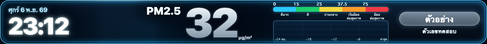
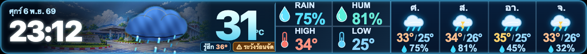

UTH • VISUAL REVIEW • LED 432×40
ตัวเลข PM2.5 และอุณหภูมิ — จัดแนวให้สมดุลกับนาฬิกา
ภาพเทียบจาก CSS หน้าเว็บจริง โดยแทนค่าตัวเลขเป็น SIMULATED เพื่อดู Layout เท่านั้น นาฬิกายังใช้รูปแบบเดิม ไม่เปลี่ยน Production ในตัวอย่างนี้

ใช้ฉากและแถบสีเดิม เปลี่ยนเฉพาะตัวเลขตัวอย่างเพื่อเปรียบเทียบตำแหน่ง

ไอคอนเมฆใหม่ปรากฏในภาพ แต่ภาพนี้เป็นเฟรมภาพนิ่งสำหรับเทียบตัวเลข ไม่ใช่ไฟล์ Animation
Current
PM2.5 ใช้ font-size 112px / weight 1000 ส่วน Weather ใช้ 92px / weight 900 ในพิกัด Board ต้นฉบับ 1296×120
Aligned (ทดสอบ)
ปรับ PM เป็น 100px / weight 900 และ Weather เป็น 90px / weight 900 พร้อมปรับแนวตั้งให้ศูนย์กลางภาพใกล้กัน โดยไม่ขยับนาฬิกา
เป้าหมายคือ Optical Alignment (จัดสมดุลด้วยสายตา) ไม่ใช่การบังคับ CSS font-size เท่ากัน เนื่องจากรูปร่างฟอนต์และหน่วยแตกต่างกัน
ดู Rain + Thunderstorm Animation รุ่นใหม่ · เปิด Production ปัจจุบัน